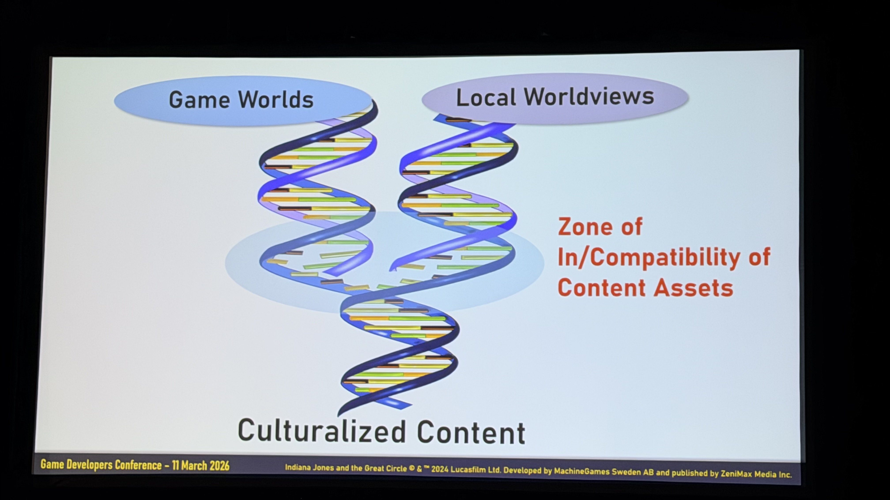
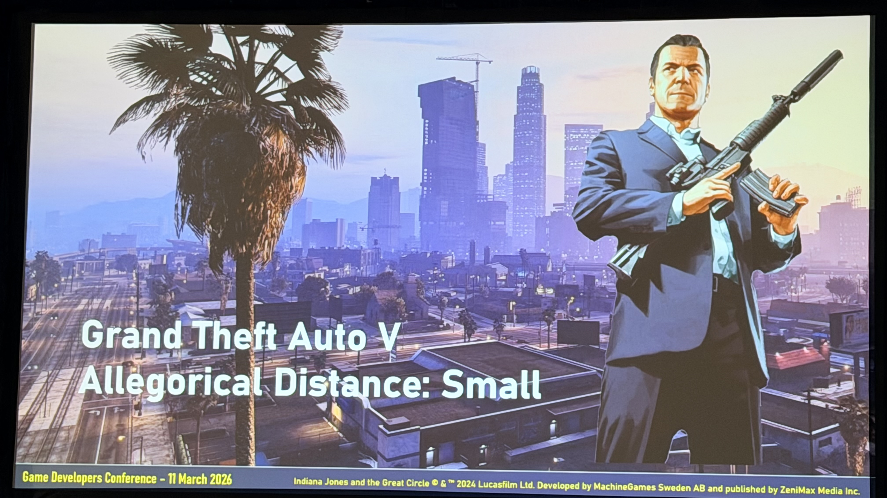
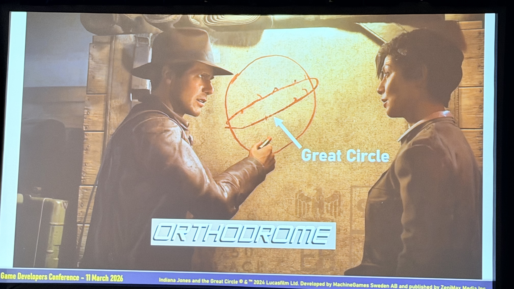
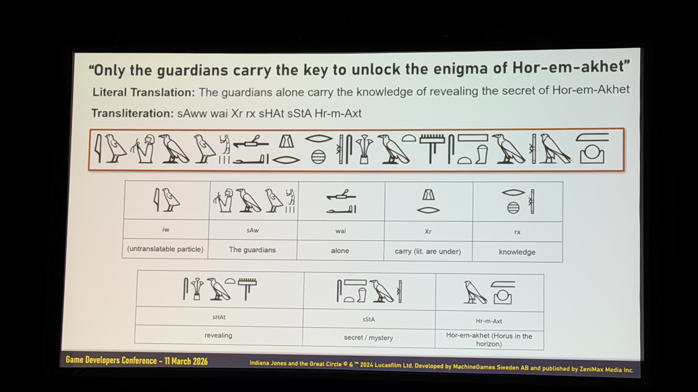
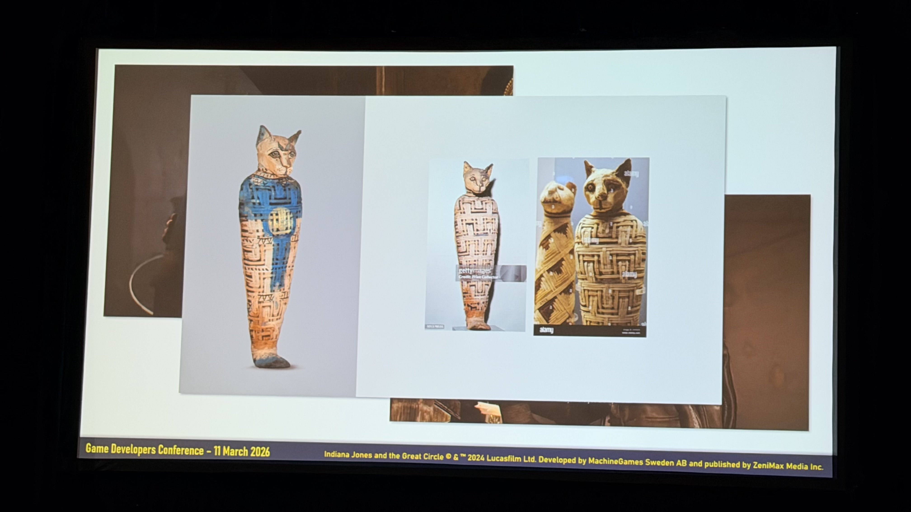
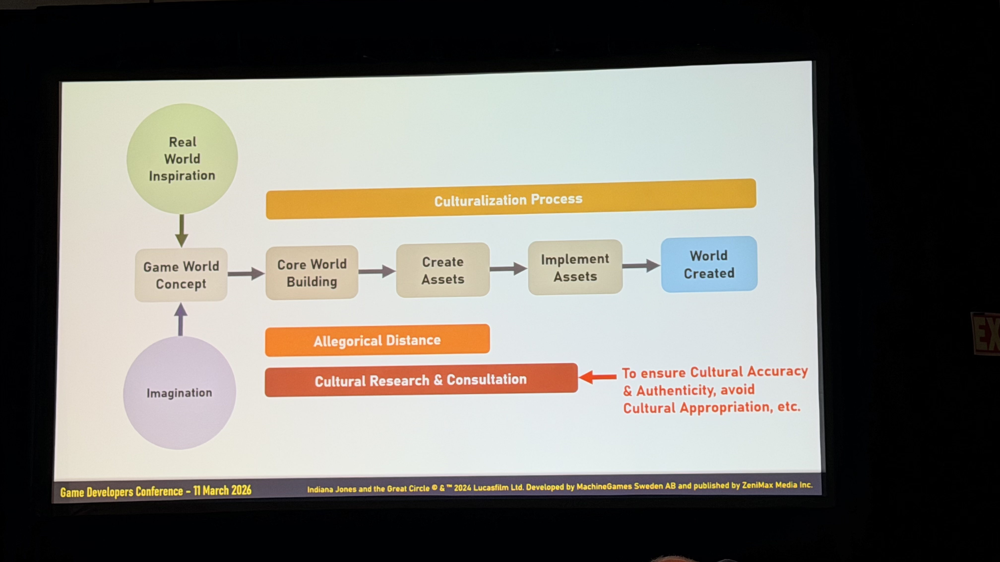
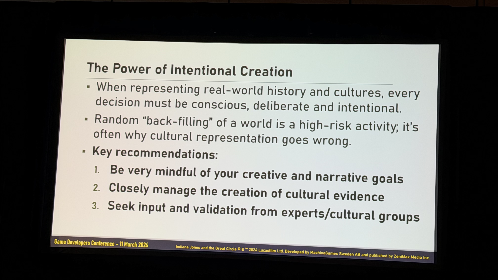
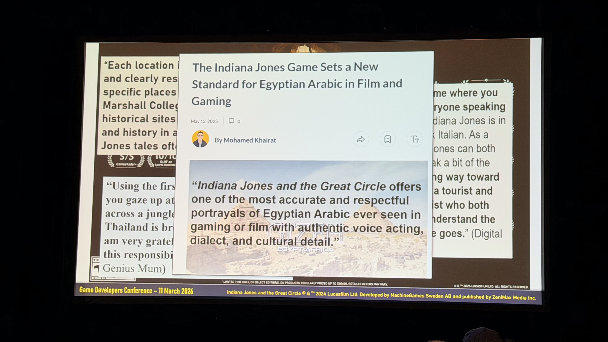
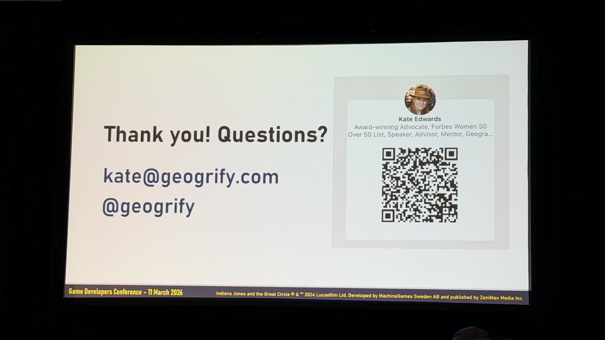

Geogrify CEO / 地理学者。元IGDA事務局長。ゲーム業界歴33年、317本に携わる。

セッション概要
GDC 2026 の Advocacy トラックで、地理学者であり「カルチャライゼーション」のパイオニアである Kate Edwards（Geogrify CEO）が登壇。「Indiana Jones and the Great Circle」における 世界構築の裏側を語りました。
「Indiana Jones and the Great Circle」は2024年12月発売の一人称アドベンチャー。 開発は MachineGames、パブリッシャーは Bethesda Softworks / Xbox Game Studios。 舞台は1937年——映画「レイダース」と「最後の聖戦」の間の時期で、 バチカン、エジプトのギザ、タイのスコータイ、上海、ヒマラヤなど世界各地を巡ります。
Kate Edwards
61歳。ゲーム業界歴33年（1993年〜）。Microsoft で13年間「Geopolitical Strategist」を務め、IGDA 事務局長を5年間歴任。現在は Geogrify CEO として317本のゲームの文化監修に携わってきた。
代表タイトル
Age of Empires（29年来）、Halo、Call of Duty、Mass Effect、Battlefield、Dragon Age、Assassin's Creed、Fallout、Horizon Forbidden West、Civilization、Final Fantasy ほか多数。

「カルチャライゼーション」とは何か

カルチャライゼーションとは、ローカライゼーションの一歩先にある概念です。 テキスト翻訳・音声吹き替えが中心のローカライズに対し、カルチャライゼーションは 宗教・政治・歴史認識・ジェスチャーの意味など「言語では表せない文化の差異」を扱います。
Edwards はこれを「遺伝子スプライシング」に例えます。 ゲームのDNAを壊さずに、文化的に問題のある部分だけを正確に切り取り、 適切なものに置き換える——外科的に（surgical）行うのがゴールです。
「アレゴリー距離」という概念
Edwards が提唱する「Allegorical Distance（アレゴリー距離）」とは、 「プレイヤーがゲーム内実装から元の現実世界のインスピレーションを知覚するために必要な努力の度合い」です。 この距離が近いほど「現実の文化をそのまま描いている」と受け取られやすく、 距離が遠いほど「あくまでフィクション」として許容される余地が広がります。
カルチャライゼーションの原則：現実世界に近づくほど、クリエイティブプロセスはより意図的でなければならない。
Small — GTA V
Los Santos = Los Angeles。誰の目にも明らか。精度へのハードルが最も高い。
Moderate — Detroit: Become Human
アンドロイドを通じた奴隷制のアレゴリー。物語が進むにつれ距離が縮まる構造。
Large — Horizon Zero Dawn
環境破壊・企業的強欲の寓意が設定の奥に。距離が大きく創作の自由度が高い。

リアル世界 vs 架空世界

Real World（RW）
制作目標: Replication and accuracy（複製と正確性）
プレイヤー期待: Realism and authenticity（リアリズムと真正性）
例: Battlefield 6 — 「架空の国ではなく現実の場所でなければならない」
Fictional World（FW）
制作目標: Uniqueness and imagination（独自性と想像力）
プレイヤー期待: Escapism and discovery（現実逃避と発見）
例: Zelda: BotW — 「どの方向に行っても何かを発見できる」
RW の3つの課題

Replication（複製）
ギザ高原を Edwards 自身の現地写真と照合。「かなりいい線いっている」と評価。宗教的アーティファクトの破壊可能性には配慮が必要。
Accuracy（正確性）
ムッソリーニを実在の写真から精確に再現。「同じパッチ、同じユニフォームスタイル」。エッフェル塔の描写にもフランス政府が敏感。
Interpretation（解釈）
Age of Empires で「ある国の教科書では起きていないとされている歴史」を変更した経験。国ごとに表現を変える必要。
The Maps — 地理学者の最初の仕事

Edwards がプロジェクトに招かれた最初の仕事はフライオーバーマップ（映画版おなじみの、赤い線で飛行ルートを描く地図演出）の制作でした。 MachineGames から届いた初期マップには映画「Raiders of the Lost Ark」で使われた正確なフォント ITC Serif Gothic が使用されており、 Edwards は「このチームが正しい選択だと確信した」と語りました。
1937年の世界地図
ナチス・ドイツ拡大期。国境が年・月単位で変動。各国を自国語（Deutschland, Sovyetskii Soyuz 等）で表記する方式で精確な地図を調査。
境界線の判断
1937年の境界線を正確に再現すると現在の政治的センシティビティに抵触。最終的に境界線は表示しない判断に。歴史的正確性より現在のグローバル市場での安全性を優先。
歴史的航空路線
1930年代の Imperial Airways 等の実際の航空路線を発掘。Raiders ではゴールデン・ゲート・ブリッジが完成前なのに完成状態で描かれていた——「私たちはその間違いを繰り返さないようにした」。
壁の地図まで時代考証
Marshall College オフィスの壁に掛かった南米の地図が「1937年以降に作られたもの」と発見し修正。「ほとんど強迫観念に近いレベルで意識していた」。

The Environments — 専門家チームによる環境構築

バチカン
バチカンの関係者から「非常に優れた再現」と称賛。1930年代ファシスト・イタリア時代を外部コンサルタントと正確に再現。
タイ（スコータイ）
タイ考古学コンサルタントが「水位が高いため地下構造物は作らなかった」と指摘。「もし作っていたら？」の仮定でクリエイティブ・リバティを取った例。
エジプト（ギザ）
最大4人のエジプト学者が同時参加。パズル機構に「エジプト人はこの技術を持っていなかった」と指摘→実在の未解明考古学発見を起点にフィクションを構築。
ヒエログリフは解読可能

「プレイヤーは壁の文字を必ずスクリーンショットして解読しようとする」——だからこそ、壁の文字には本物の意味を持たせました。 英語テキスト → エジプト語専門家がヒエログリフに翻訳 → 音声転写 → 個々の記号に分解 → 壁面デザインに落とし込む。 この工程をゲーム全体で何度も繰り返しました。
The Artifacts & Relics — 文化的オブジェクトと地質学的考証

一部の国には実在する文化財の複製に関する法律があるため、実物を参考にしつつ完全なコピーは避けました。 真正性（authenticity）と独自性の両立が鍵です。
17種の架空レリックと地質学的整合性


結果、いくつかの鉱石は「可能性ゼロ」と判定され変更に。 Edwards の88歳の父（地質学者）がコンサルタントとして参加し、ゲームのクレジットに名前が載っています。
カルチャライゼーション・プロセス

最重要ポイント：カルチャライゼーションは最初から始める。 「どんな世界を作るのか、誰が登場するのか、プレイヤーのエージェンシーは何か」、そこから始める。 早い段階での修正は安い（fix it early, fix it cheap）。

Key Recommendations
- Be very mindful of your creative and narrative goals（創作・ナラティブのゴールを常に意識する）
- Closely manage the creation of cultural evidence（「文化的証拠」の創出を緻密に管理する）
- Seek input and validation from experts/cultural groups（専門家・文化グループからのインプットと検証を求める）
最大のリスクは「Random Backfilling」（ランダムな穴埋め）。 「なぜそこにあるのか」を考えずにオブジェクトを環境に投げ込む行為が、 文化的表現が失敗する最大の原因。
Is All This Culturalization Effort Worth It?

Edwards の締めの言葉
"That's the work. That's what you do. たとえほとんどのプレイヤーがその文化の出身でなくても——あなたが表現している文化の人たちは必ずわかる。 彼らにはわかるのです。特定の現実世界の文化を表現するなら、少なくともその一つの文化の人たちが 「あなたたちは真剣にやったんだ」とわかる——それが仕事をする理由だ。"
"Everything was intentional. Everything was thought through. Even almost over-thought through."
すべては意図的だった。すべては考え抜かれた。考えすぎなくらいに。
